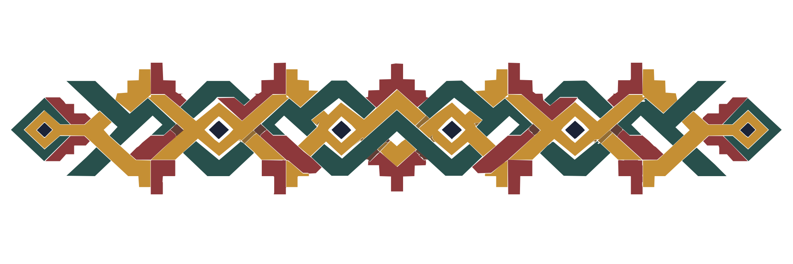
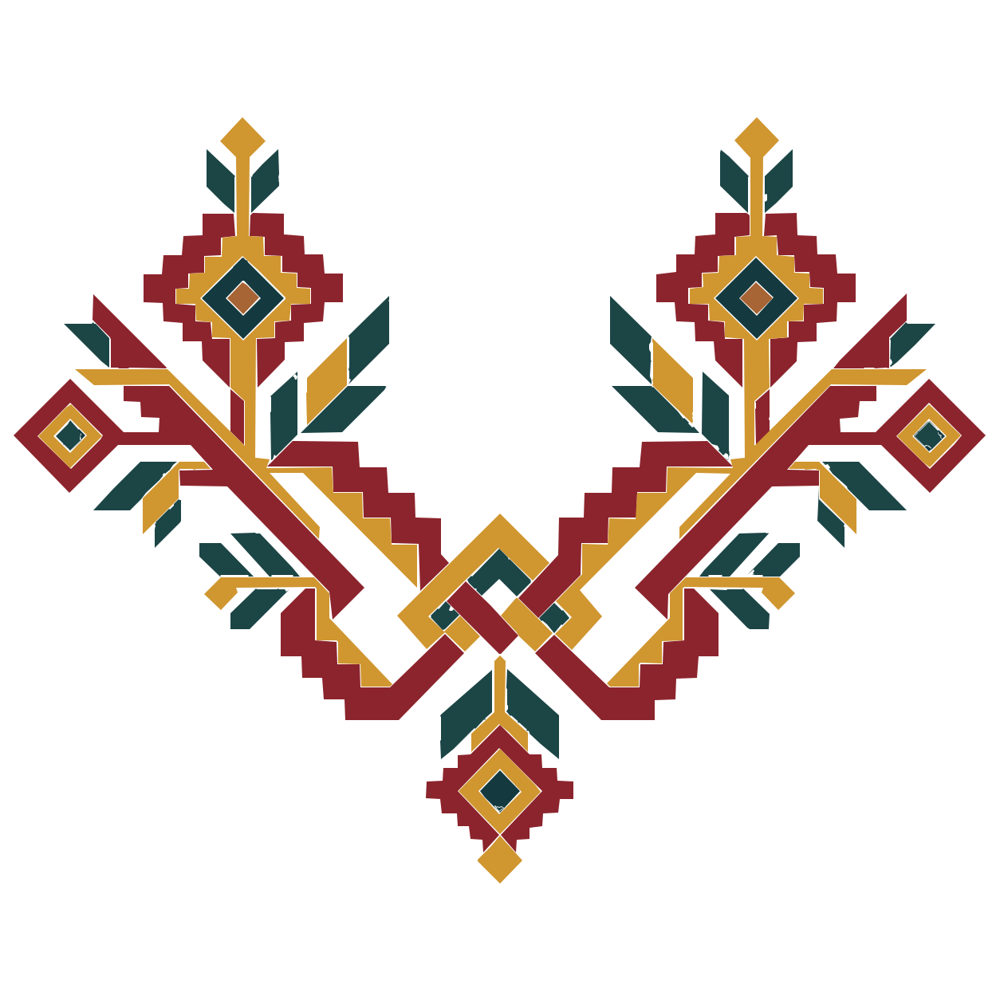
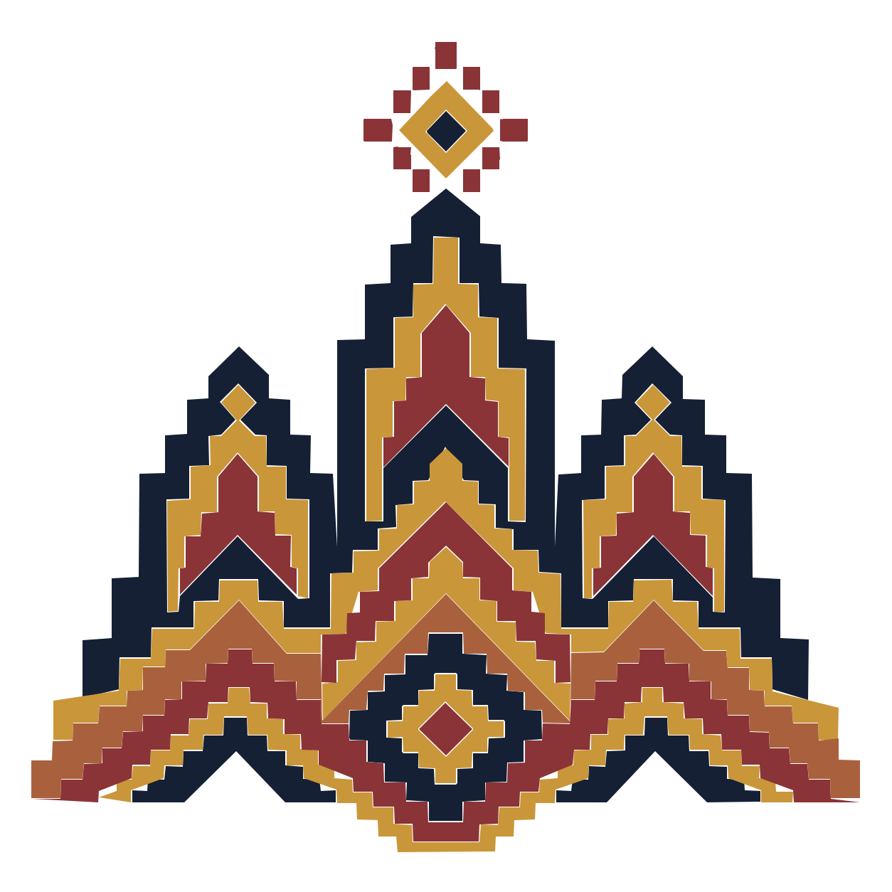
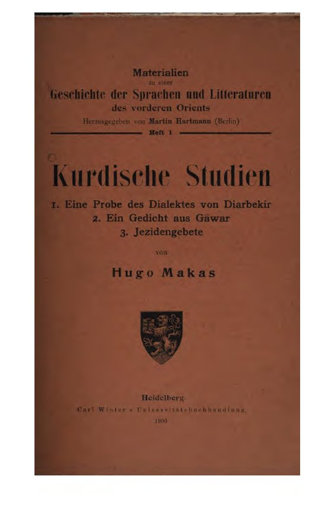
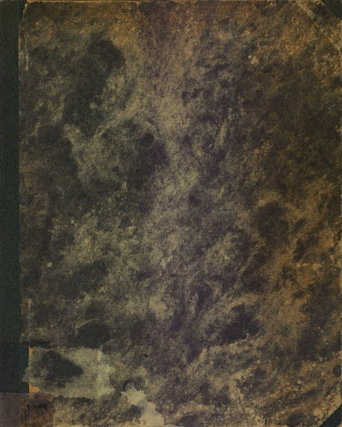
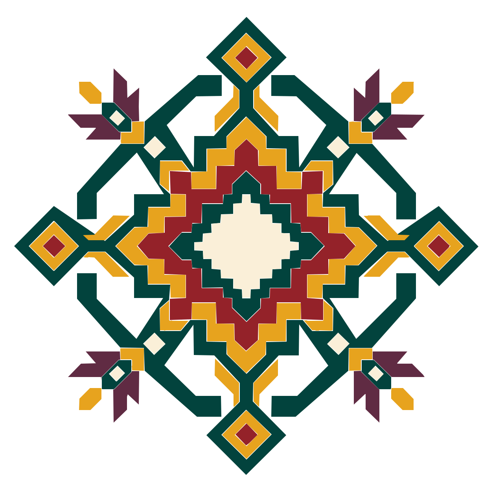
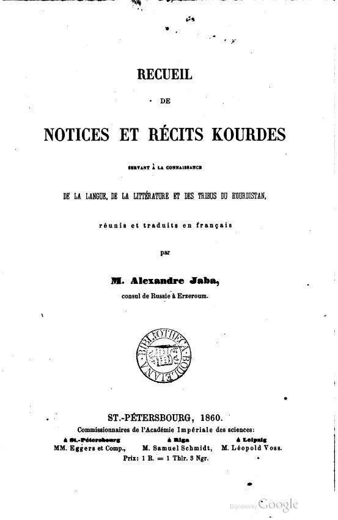

Lor Loriyê
Dengbêj Apê Yusuf · Dengbêj Mukaddes · Aryen Kom
Listen on YouTube ↗Konserên Tamarayê · KOM MüzikOpen books across Kurdish languages and scripts
Kurdish books, poetry and stories. Open to everyone.
Meet a story. Stay for a poem.

Step into a storyMamê AlanKurmancî · A modern retelling
Spend a moment with poetryZembîlfiroşKurmancî · A classical poemListen to Kurdish speakers in their own words.
Stories carried in song.
Dengbêj Apê Yusuf · Dengbêj Mukaddes · Aryen Kom
Listen on YouTube ↗Konserên Tamarayê · KOM MüzikExplore her recordings with Kurdish transcriptions and Turkish translations.
Listen in the archive ↗Orient-Institut Istanbul · QEDAn album playlist shared by the Şakiro Foundation.
Listen on YouTube ↗Dengbêj Şakiro Vakfı ↗A short Wikitongues recording of Mohamad Saeed speaking the Northern variety of Kurdish.
A Wikitongues oral-language recording made in Oslo, preserving a natural sample of spoken Soranî.
A newer Wikitongues oral-history contribution, donated to Wikimedia Commons for open reuse.
Explore thousands of short pronunciation recordings. The gallery currently lists 3,857 Kurmancî recordings, plus additional Kurdish-language material.
Kurdish has a long written literary tradition, while oral storytelling, dengbêj performance, songs and regional speech are also central parts of its cultural record. The goal here is to preserve both.
A classical Kurdish love story about Mem and Zîn, caught between devotion and separation.

RetellingA classic Kurdish epic narrative preserved among the Kurmancî stories in Le Coq’s early twentieth-century collection.

A tragic Kurmancî love epic: Siyabend and Xecê flee together to Mount Sîpan, where a deer hunt leads to their final separation and death.



A well-known Kurdish oral love story.
The story of Dimdim Castle and Xanê Lepzêrîn, where a seventeenth-century siege became one of the best-known Kurdish heroic epics.
A guide to Bazîdî’s forty Kurmancî stories: love stories, historical episodes, social tales and a Siyabend û Xecê variant, with links back to the public-domain 1860 scan.
A prince leaves wealth behind to live by selling baskets, then faces a noblewoman’s relentless attempt to win him away from his chosen life and loyalties.
A major Kurmanji epic of Derwêş and Edûl, combining tragic love, tribal obligations, religious difference and intertribal war.
A devout sheikh dreams of an Armenian woman, travels in search of her, and faces a severe test between religious identity, desire and mystical love.
The story of an ascetic who, after decades of devotion, is gradually drawn into temptation, crime and a final betrayal by the devil.
A long Kurdish narrative connected with Barzan and the surrounding region, published with Kurdish text, translation and notes.
A Hekarî-linked tale listed among Nikitine’s early published Kurdish story collection.
A playful folktale about Anansi trying to keep all the world’s wisdom for himself.
A suspenseful tale of a girl who must outwit a dangerous dog and find her way home.
A traditional-style animal story explaining why the eagle flies and the hen scratches the ground.
A strange and imaginative folktale about children made of wax and the brother who reaches the sunlight.
Tom challenges expectations at the market and keeps trying until customers finally buy his bananas.
A child becomes fascinated by a grandmother’s mysterious “magic” basket of ripening bananas.
An illustrated first reader about everyday actions, in Sorani with English and French alongside.
A young reader looks for someone to share a book with in this illustrated Sorani story.
A girl faces an unkind stepmother and finds help from her aunt in this illustrated Sorani story.
One of the Kurdish tales Nikitine published from material associated with Molla Said Kazi of the Şemzînan / Nehrî region.
A historical Kurdish story title preserved in Nikitine’s 1926 collection of narratives from the northern Kurdish dialect area.
One of the named tales in Nikitine’s collection, preserved with Kurdish text and English translation in the original publication.
Try removing a filter or searching a different spelling.
You can change this at any time. Right-to-left scripts are supported throughout the library.
Suggestions are reviewed before anything is added. Submitting a form never publishes a book automatically.